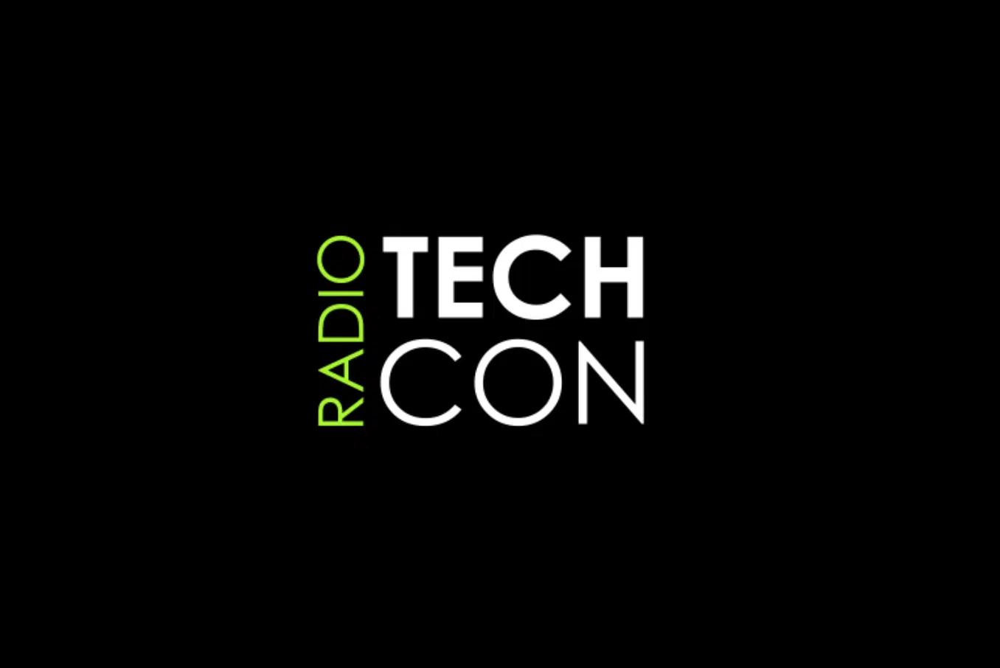

History
TechCon was first established in 2010 as a platform for technology professionals, enthusiasts, and innovators to come together and share their insights, knowledge, and experiences. Over the years, the conference has grown into one of the largest and most anticipated tech events, attracting thousands of attendees from across the globe. With a focus on fostering collaboration, education, and networking, TechCon has become a hub for discussing the latest trends and breakthrough technologies shaping the future of the industry.

Mission
The mission of TechCon 2024 is to inspire and empower technology leaders, professionals, and innovators to create positive change through the power of technology. By bringing together diverse voices from around the world, we aim to spark creativity, foster collaboration, and showcase the solutions that are driving digital transformation across industries. Our goal is to provide an immersive and impactful experience that equips attendees with the tools, insights, and connections they need to thrive in the fast-evolving tech landscape.
Past Speakers
Over the years, TechCon has hosted several prominent speakers who have made significant contributions to the tech industry. Here are a few of our notable past speakers:

Elon Musk - CEO of SpaceX and Tesla, known for his groundbreaking work in electric vehicles and space exploration.

Satya Nadella - CEO of Microsoft, who has led the company's focus on cloud computing and AI technologies.

Sheryl Sandberg - Former COO of Facebook, recognized for her leadership in social media and digital marketing.